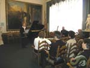
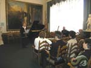
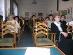
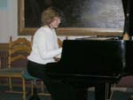

НОВОСТИ 2006 ГОДА:
1. Под занавес уходящего 2006 года, 16 декабря, в Доме культуры строителей наш город отметил 85-летний юбилей Николая Алексеевича Троянова. Почетного гражданина г. Николаева, Почетного члена Пушкинского клуба, Заслуженного артиста Грузии пришли приветствовать Заместитель Николаевской Облгосадминистрации Сергей Николаевич Карцев (месяц назад он финансово поддержал постановку пьесы Н.А. Троянова «Сковорода»), заместитель Николаевского городского головы Юрий Исаевич Гранатуров, директор Областного телевидения Александр Александрович Митрофанов, представители управлений культуры области и города, средств массовой информации, сын его, Алексей Николаевич Троянов, со своей семьей, городская общественность и многочисленные ученики и друзья. В исполнении руководимого им 43 года Народного драматического театра Маэстро театрального искусства показал зрителям несколько сцен из написанных им пьес «Триумф старого дома» и «Сковорода». После продолжительных аплодисментов благодарные зрители буквально завалили цветами, подарками и вниманием юбиляра. |
4. Москва-Николаев, 13-17 июля 2006 г .
По приглашению городского головы Николаева В.Д. Чайки при содействии компании «Русал» в нашем городе находилась делегация деятелей культуры Правительства Москвы в следующем составе ...
5. 16 мая 2006 в газете «Вечерний Николаев» вышла статья А И. Золотухина "МЁРТВЫЕ ЖЕ СРАМА НЕ ИМУТ..." посвященная проблеме сохранения городища «Дикий Сад».
6. 30 января 2006 г. исполнилось 75 лет николаевскому поэту, лауреату премии им. Н.Ушакова, почетному члену Николаевского Пушкинского клуба Эмилю Израилевичу
Январеву (1931-2005). Общественность города отметила эту дату и память о поэте презентацией его последней книги стихов «Подлинник» на городском собрании,
которое состоялось 20 февраля в Центральной городской библиотеке им. М. Кропивницкого. Книга издана издательством Ирины Гудым при содействии директора
Николаевской дирекции банка «Аваль» Сергея Прудкого и Благотворительного фонда «Николаев-2000». Вечер вели ученики и друзья юбиляра поэты Владимир Пучков и
Екатерина Голубкова. На вечере присутствовали жена поэта Л.П. Костюк и дочь Юнна.

7. В издательстве Ирины Гудым вышла подборка брошюр Анатолия Золотухина из 8-ми выпусков «Неизвестное о Пушкине»:
Вып. 1 – «Две истории о любви»
Вып. 2 – «Родня по вдохновению (Пушкин и Гёте)» В выпуске приведена гипотеза автора о том, как Пушкин помог Гете (20 лет
он не мог найти решение!) закончить «Фауста», а Гете, в свою очередь, помог Пушкину решить проблему создания поэмы «Медный всадник»

Вып. 3 – «Пушкин и Рафаэль»

Вып. 4 – «Сказка о царе Салтане» - описание тайного приезда Пушкина в Николаев»
В выпуске приведены доказательства того, что «Сказка о царе Салтане» - это описание тайного приезда Пушкина в Николаев в октябре
1823 г. на яхте Е. Зонтага «Утеха». Приведено 41 примечание к сказке, как комментарии этого события.

Вып. 5 – «Тайна поездки Пушкина «на саранчу»

Вып. 6 – «А.С. Пушкин и В.И. Даль» - Рассмотрены взаимоотношения Пушкина с Далем. Представлены доказательства (на основе архивных данных) того, что Даль не писал пасквиля на жену адмирала А.С. Грейга. Рассмотрен провидческий рисунок Пушкина, связанный с судьбою Карла Даля, брата В.И. Даля.

Вып. 7 – «Пророк России» (тайна гибели Пушкина)

Вып. 8 – «Пир во время чумы» А.С. Пушкина (трагедия Гения)» - Приведены доказательства того, что трагедия А.С. Пушкина «Пир во время чумы» была прощальной песнею, предчувствием близкой гибели. Поводом для расправы над поэтом было то, что он фактически был идеологом восстания декабристов.
Как вариант этой подборки брошюр автором разработана книга «Неизвестное о Пушкине» (208 стр. 98 илл.),
в которой представлены все эти выпуски. Книга вышла небольшим тиражом в издательстве Ирины Гудым.-

8. Увидела свет книга Анатолия Золотухина «Тайны «Слова о полку Игореве» (моногра-фическое исследование).- Николаев, Издательство
Ирины Гудым, 2005.-560 стр., ил.
Автор работал над этой темой больше 25 лет. В книге утверждается, что «Слово о полку Игореве» выполнено в жанре светского богослужения, т.е. светское содержание в нём вложено в форму богослужения. Показано, что текст памятника по форме может быть представлен в виде всенощного бдения или византийского канона. В последнем есть более 250 акро-, мезо- и телестихов, отдельных и свитых особым образом. На основе авторских указаний восстановлена техника и правила составления тайных акромезотелестихов. Благодаря этому удалось установить, что автором «Слова о полку Игореве» был Кирилл Туровской (1101-1208), а в качестве Бояна выведен наш первый поэт, летописец и художник Иларион-Никон (997-1088), выяснить другие важные обстоятельства их жизни и творчества, а также определить дату создания и исполнения памятника в Киеве в марте 1187 г. Реставрирован сценарий первой постановки «Слова» и показано, что это была первая в мире опера, созданная за четыре века до итальянской.
9. МЕЖДУНАРОДНЫЙ ДЕНЬ ПОЭЗИИ 2006 ГОДА В НИКОЛАЕВЕ! Четвертый год Николаевский Пушкинский клуб совместно с Николаевской областной организацией Национального союза писателей Украины отмечает Всемирный день поэзии. На этот раз встреча с профессионально пишущими поэтами произошла в воскресенье 26 марта 2006 г., в 14 часов, в музыкальной гостиной художественного музея им. В.В. Верещагина. Вечер вели председатель Союза писателей Вячеслав Качурин и председатель Пушкинского клуба Анатолий Золотухин. Вечер открыли ученики Марины Матвеевой: Михаил Кван исполнил «Прелюдию и фугу» И.С. Баха, а Павел Тысляк – 1-ю часть сонаты Шуберта. На вечере выступили поэты Аркадий Суров (читал стихи Э. Январева и свои стихи), Марина Матвеева (прочла свои стихи и исполнила на фортепиано произведения Шопена). Свои стихи читали Михаил Ковалевский, Тамара Москаленко, Светлана Мезина и др. В заключение вечера Вячеслав Качурин исполнил романсы на свои слова под аккомпанимент гитары. На вечере прозвучали в исполнении Валентины Захаровой и Лилии Розниной, на фортепиано аккомпанировал Валерий Апостолов: романс «Ищу в природе красоту» (стихи А. Чепурова, музыка Я. Дубравина) и «Песня о сердцах» (стихи В. Щенникова, музыка Г. Левкодимова).  



  |


 |